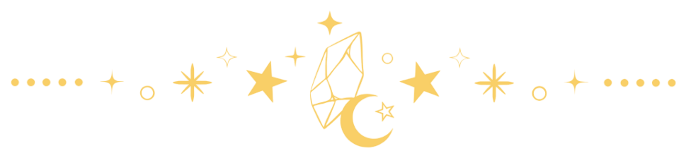
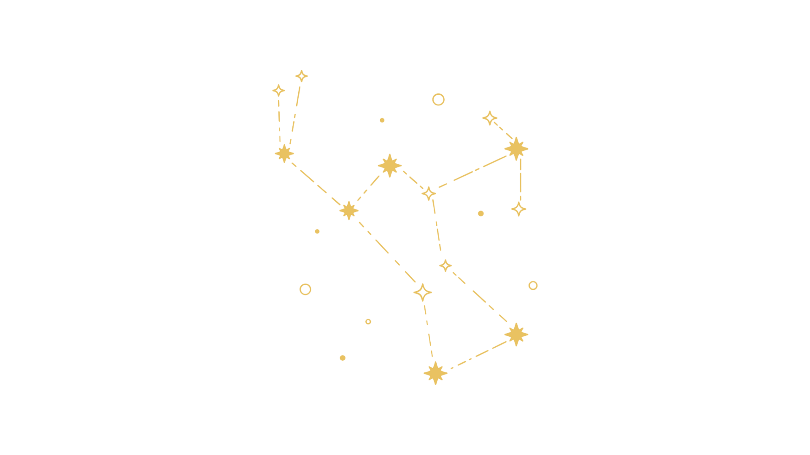

Tentang Prodi
Tentang Prodi

Program Studi Bahasa dan Kebudayaan Jepang UAI berkomitmen mencetak lulusan yang unggul dalam bahasa dan budaya Jepang, siap menghadapi dunia kerja, serta mampu berkontribusi melalui inovasi dan kolaborasi.
Mitra Partnership
Prodi Bahasa dan Kebudayaan Jepang UAI menjalin kemitraan dengan berbagai institusi di dalam maupun luar negeri untuk mendukung pendidikan, penelitian, serta pengembangan kompetensi mahasiswa. Melalui kolaborasi ini, mahasiswa memperoleh kesempatan belajar, bertukar budaya, dan mengembangkan pengalaman profesional dalam lingkungan yang lebih luas.

Prodi Bahasa dan kebudayaan jepang Univeritas Al-Azhar indonesia bekerja sama dengan salah satu universitas di jepang yaitu Tohoku university. Kerja sama yang di lakukan yaitu Internasional Study Exchange dan Nihonday
Untuk program Study Exchange peserta akan merasakan pengalaman berkuliah di Tohoku University




Prodi Bahasa dan kebudayaan Jepang Universitas Al-Azhar Indonesia dengan Tokyo world Japanese Language school dalam program pertukaran mahasiswa dengan beasiswa YOMIURI Newspaper
Dalam program ini peserta akan merasakan bagaimana bekerja menjadi loper koran (pengantar koran) sambil sekolah bahasa di Jepang


Prodi Bahasa dan kebudayaan Jepang Universitas Al-Azhar Indonesia Bekerja sama dengan salah satu perusahaan jepang yaitu Ozora Publishing dalam program magang.
Dalam program magang tersebut Peserta magang akan diajarkan tentang Web desain dan dapat merasakan pengalaman bekerja di perusahaan jepang


Prodi Bahasa dan kebudayaan Jepang Universitas Al-Azhar Indonesia Kerja sama dengan beberapa LPK seperti Minori, Fukutomi dan lain lain, dalam program pemagangan sebagai pengajar
Dalam program magang ini Peserta akan merasakan bagaimana menjadi pengajar Bahasa Jepang untuk mendapatkan pengalaman melakukan Hourenso ketika bekerja


Prodi Bahasa dan kebudayaan Jepang Universitas Al-Azhar Indonesia Bekerja sama dengan program magang bersertifikat passengers handling di bandara internasional Narita di Jepang
Dalam program magang ini peserta akan menjadi Staff passgers handling yang bertugas membantu pelanggan di bandara


Prodi Bahasa dan kebudayaan Jepang Universitas Al-Azhar Indonesia pernah Bekerja sama dengan Wafca Japan dan Wafca indonesia dalam proyek kemanusiaan


Universitas Al-Azhar Indonesia
Komplek Masjid Agung Al Azhar
Jl. Sisingamangaraja, Kebayoran Baru
Jakarta Selatan 12110
Telp: (021) 727 92753
E-Mail:
info@uai.ac.id
fib@uai.ac.id
MEDIA SOSIAL